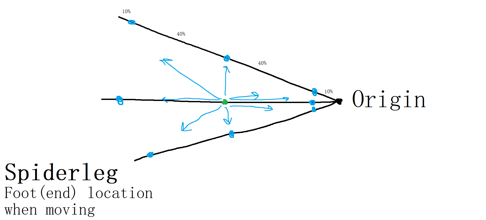

|
For the game that my team was making for our second assignment of my studies, i made procedurally animated spider legs for the main character. I also made a raycast for the legs to work, the system that allows the player to control the npc teammates with mouse controls and the system for the laser puzzle. On top of the coding things, i also came up game concept and made a couple of 2d assets like the player character, the side bar and the laser turret. Design ProcessIn the concepting stage of development i came up with a game where the player controls a character with mechanical spider legs and control other party members to with their own abilities to solve puzzles on a deserted planet. The idea mostly came from thinking about what interesting thing i wanted to code, but i like the idea enough to suggest it. My team members also liked it a lot so we went into development with that idea. I started off with making the spider legs and later on started making the ordering mechanic and the lasers. Because i made the lasers, i could also design the level where the player is introduced to that new puzzle. |

Engine GameMaker v2023.11.0.121Development Time 2 MonthsDevelopment Period Nov 2023 - Jan 2024Developed by: Jonas ValstarTijn Omlo Michel Pluim Luka Pavičić Jeda Oerlemans My Role(s): Lead ProgrammerGame Designer 2D Artist Genre 2D Team-based Puzzle gameFeatures Procedural AnimationTeam ordering Laser Puzzle Platform Windows |
During the whole development of the game i recorded all of my process and combined it into a time-lapse. Because I like movies, I also gave it a movie like intro and credits. The total length of all the recording is 43,5 hours long.
I also made a time-lapse of the process of making the player character sprite.
The main selling point of the game were the procedurally animated spider legs. I had never done procedural animation, but i have never let that stop me. I had an idea of how i wanted to do it, which was to check if the leg end point was either too far away or too close by. If one of those was the case, it would move the leg end point back to a predetermined location based on the player. It wouldn't be spider legs however with only one section, so i made a joint in the middle. The location of the joint is decided by simple triangle maths. If we see the start, joint and end point as a triangle, and we have the lengths of all sides, than we can calculate any corner with the cosine rule.
This looked fine, but i wanted to perfect this and make it as realistic as possible. The biggest improvement i made was to change the coordinate system for placing the end point to a grades system. Instead of placing the leg on one point, it would now place the leg in the direction of the leg and based on player movement so that the leg wouldn't have to be replaced for as long as possible. The check if an endpoint was no longer correct was also changed to use angles instead of x and y coordinates.
The last thing big thing that i did was making my own raycast system because GameMaker didn't have one. The way I did this is by using a method called binary search. This works by supplying 2 points and then it check whatever a half is fully correct or fully incorrect, if so it would check half of the other side. This repeats until a certain threshold is reached for the distance it test. I used this to calculate where the leg could be maximally placed if the real target location was blocked.
First version of the legs before it was made to have a joint | Legs after adding a joint to separate the legs and an transition between positions |
Legs with the sprites implemented in the game | Latest version of the legs using the new angle new position check |
|  | |
The way the legs move to a new position based on movement |
To control the MEH's i needed to make a system that would be easy to use for the player and capable. The idea I had was to make a system like Baldur's Gate 3 in in which the mouse would be enough to control every action. This would make it easy to use and with the mouse having 2 buttons, capable of doing different things. I made it so that for both characters left click means engage in action and right click means disengage. For the strong MEH for example, left click is picking up a boulder and right click is dropping it. Left click on empty ground just means walk there.
first version of the ordering mechanic | Later version of the ordering mechanic |
One of the puzzles in the game was the laser puzzle. In this puzzle a laser would shoot out of an emitter, or laser turret, and bounce against mirrors to activate a laser detector. That laser detector would then give a signal to wherever it was connected to (usually a door, in which case it opens). The way this is done is by checking every grid cell in the direction of the emitter if there is something. If there is a mirror, it would check which frame the sprite is in and if it can bounce off. If it can bounce it changes direction to the way it bounced. If there is a detector, it activates it and stops. If there is anything else on the cell it just stops.
The laser level was designed to slowly introduce the player to the lasers mechanics. The first laser only requires the mirror to be moved and the laser to be activated. For the second laser, a mirror had to be turned around. And for the third level nothing new was introduced, but the route complicated. During this there also is the puzzle of switching MEH's in and out of the house which adds an extra layer of complexity.
 |
||
The lasers working in a test room | The solution to the laser puzzle. First yellow, then blue and lastly red. Purple is all colours |
During the development period i was also experimenting with making pixel art (for example the Oleck project). I wanted to enhance my skills in that department, so i requested if i could do some 2d assets for our game. I asked the player character specifically because i wanted to experiment with doing semi-realistic pixel art together with the glass dome on the top. Later i also did the assets for the side bar where the player could select which MEH to control along with the laser turret.
 |
||
Player sprite without the legs | Side bar ui filled with controls for selecting npc along with main menu, restart, fullscreen and debug mode |
 |  |
|
Laser turret sprite in it's deactivated and activated state | Laser detector sprite in it's deactivated and activate state |
I came up with the concept for the game. It started as a concept of a game where i could make a programming system that i have never done before, but ended as an actually good game concept that we collectively decided on making with some tweaks to fit it to everyone's desires. At first the idea was quite big to do in 2 months so we had to scale down and cut some things out.
The idea basically is that the player is a character that has 6 mechanical spider legs that they can use to vault over gaps in the terrain, pick locks and catch bugs. There are also CIT's that have different abilities. The main idea behind the legs was to make them smart and do things without input of the player, but this was scrapped because of the time-constraints. The story plays out on an abandoned world where food is scarce, so the player also has to hunt for food when able. The main objective is too gather a team of CIT's and either escape the planet or build a settlement. The idea was that all the players dialogue choices would affect the story.